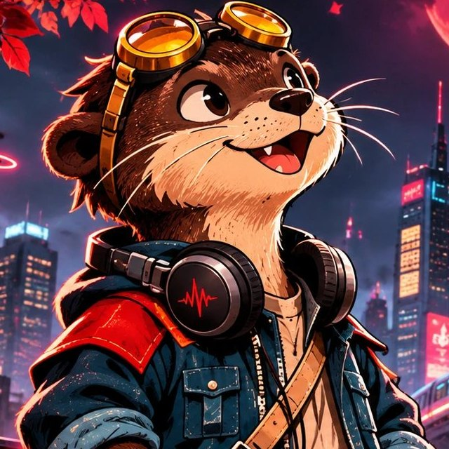
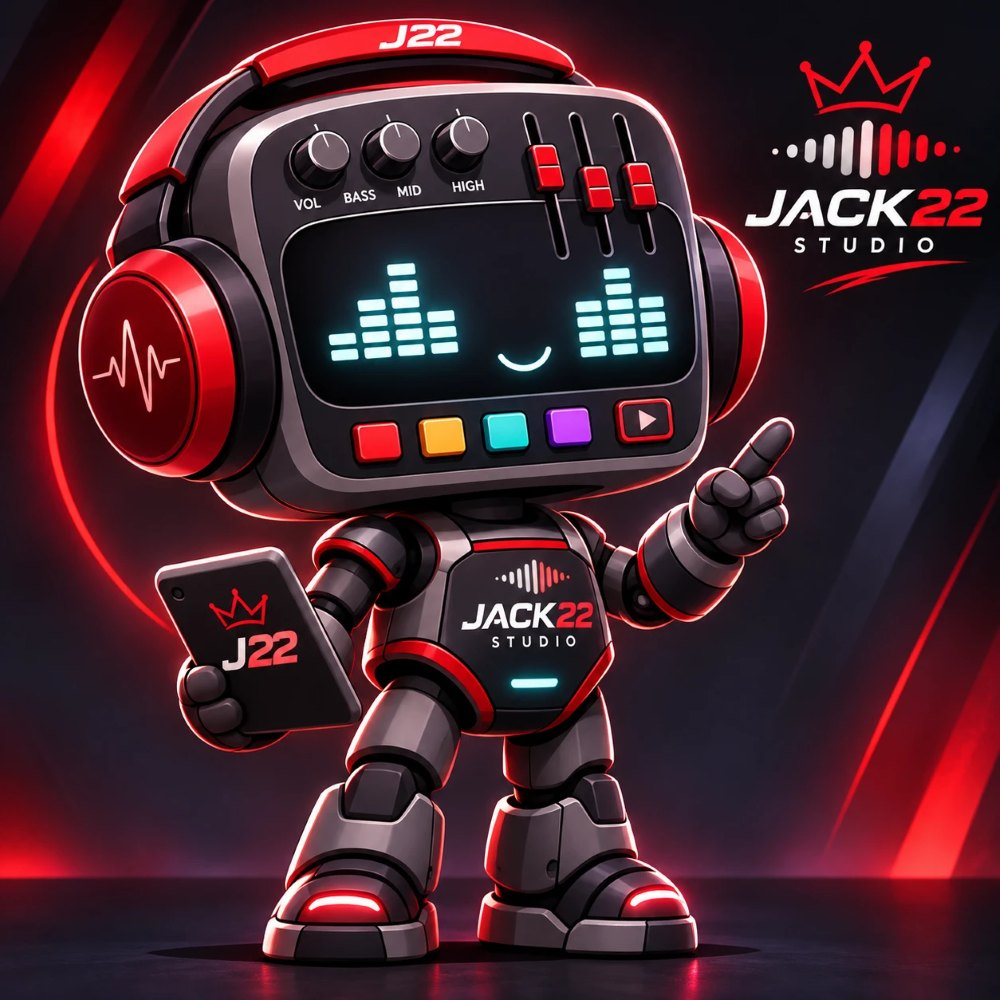

Musique
Créer un morceau avec JACK22 STUDIO, le mixer avec J-DJ.
 NEW DUCLA MAISON MÈRE
Essayer
NEW DUCLA MAISON MÈRE
Essayer
NEW DUC · LA MAISON MÈRE
La musique, la radio et les langues aujourd’hui. Puis l’image, la vidéo, le texte, le code, l’IA… NEW DUC rassemble nos idées et les fait grandir, une par une.
QUI SOMMES-NOUS
NEW DUC est la maison mère de nos projets. On imagine des outils et des univers qui donnent envie de créer, même quand on n’y connaît rien. Chaque projet devient une filiale, avec son nom, son style et sa mascotte, mais tous partagent la même idée : rendre la création simple, libre et accessible.
NOTRE MONDE
Cinq sont ouverts : la Musique, JACK RADIO, les Langues, la Vidéo et les Finances. Les trois autres s’ouvriront un à un, quand ils seront prêts.
Créer un morceau avec JACK22 STUDIO, le mixer avec J-DJ.
La fréquence du bloc : 47 programmes rap, R&B et sons caribéens en direct.
Anglais, espagnol, allemand et français, du débutant au pro en 6 mois, avec JACK BLABLA et Jack, le perroquet.
Monter tes clips, mixer le son et retoucher tes photos dans un seul atelier, avec JACK FUSION.
Suivre tes comptes, ton budget, ton épargne et tes charges fixes avec JACK FINANCE, et apprendre la Bourse avec de l’argent fictif avec JACK BOURS.
Des pochettes et des visuels pour habiller tes morceaux.
Écrire, apprendre et construire tes propres outils.
Un compagnon pour passer de l’idée au projet.
EN DIRECT SUR LES ONDES
La fréquence du bloc. Rap, R&B, shatta, dancehall, afro et reggaeton en direct, du monde entier. Le lecteur est intégré à Jack World : tu écoutes sans passer par les sites des radios. Tourne la roulette, la station arrive au centre, appuie et écoute.
Les radios appartiennent à leurs diffuseurs. Leur disponibilité peut varier selon le pays.
CE QUE TU PEUX FAIRE
LA SUITE
Ce sont nos prochaines ambitions, pas des dates promises : chaque univers ouvrira quand il sera prêt.
JACK22 STUDIO et J-DJ sont en ligne.
La radio de la maison, en direct.
JACK FUSION est en ligne, en version bêta.
JACK FINANCE et JACK BOURS sont en ligne.
Pochettes et visuels.
Écrire, apprendre, construire.
De l’idée au projet, partout.

NOTRE MASCOTTE
Lunettes d’aviateur sur le front, casque autour du cou : Sillage est curieuse de tout et passe d’une idée à l’autre sans perdre le fil. Elle guide la maison d’un univers à l’autre, pendant que chaque filiale a sa propre mascotte : Jackbot pour JACK22 STUDIO, le bot J-DJ pour J-DJ, Jack le perroquet pour JACK BLABLA.
CE QUI EXISTE DÉJÀ
Gratuites, dans ton navigateur, sans compte.


Ton studio de musique dans le navigateur, avec Jackbot comme guide : compose ton beat, pose ta voix, mixe et exporte ton morceau.


Deux platines pour enchaîner tes morceaux comme un DJ, même si tu n’as jamais mixé. Synchro, scratch, sampler, et ton mix en MP3.

Apprends l’anglais, l’espagnol, l’allemand, ou maîtrise le français façon Bescherelle, avec Jack, le perroquet : 6 niveaux du débutant au pro, un parcours de 6 mois, et une explication écrite et vocale après chaque erreur.

Ton atelier de montage dans le navigateur : monte tes vidéos, mixe le son, retouche tes photos, ajoute titres, transitions et sous-titres, puis exporte ta vidéo. En version bêta.

Tes comptes, tes opérations, ton budget, tes objectifs d’épargne et tes charges fixes au même endroit, avec des graphiques pour voir où va ton argent. Sans compte, tes chiffres restent dans ton navigateur.

Apprends la Bourse sans risquer un centime : 25 leçons en 5 niveaux, des quiz, des cartes mémoire et un simulateur de marché avec 10 000 € fictifs. Un outil pour apprendre, pas un conseil en investissement.
ON COMMENCE OÙ ?
Créer · Partager · Apprendre.